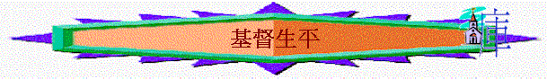

[ Home ] [ Up ] [ 長大成人課程 ] [ 初信造就 ] [ 信徒造就 ] [ 靈修生活 ] [ 基督生平 ] [ 栽培員訓練 ]
目的:
用主日學教授形式(可以互相分享)， 將基督在世生平教導信徒，內分教師版與學生版．
[ 1降生與童年(一) ] [ 2降生與童年(二) ] [ 3受浸與受試(一) ] [ 4受浸與受試(二) ] [ 5選召與跟從 ] [ 6傳道與神蹟 ] [ 7拒絕與敵擋 ] [ 8測試與變像 ] [ 9進城與潔淨 ] [ 10受試與警告 ] [ 11被賣與受審 ] [ 12被殺與復活 ]
Word 版
hit counter